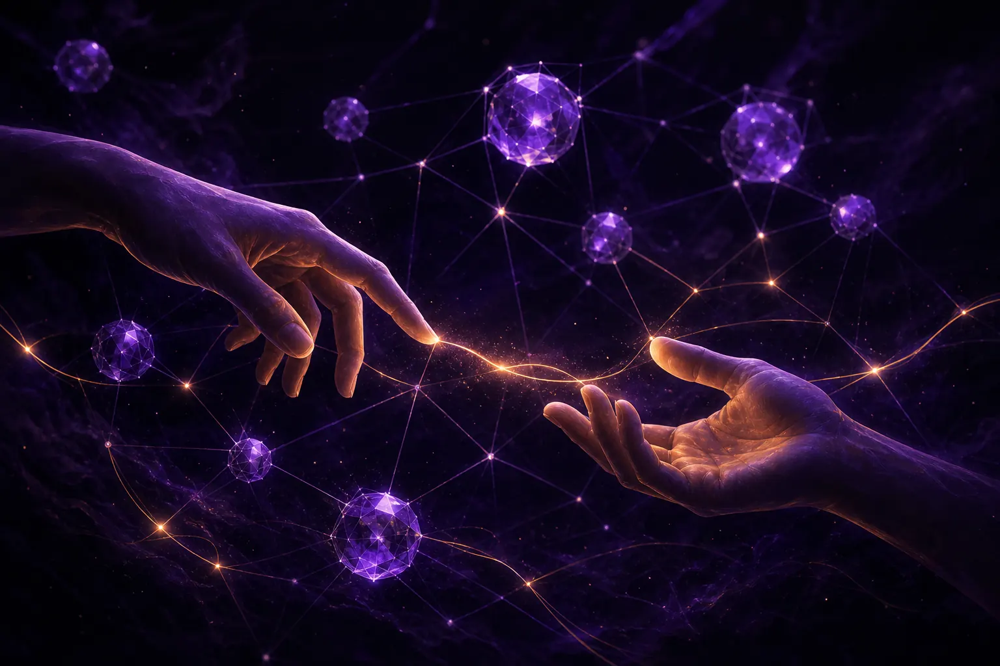

Keeping human connection in automated marketing

To keep human connection in automated marketing, decide in advance which moments must involve a real person, make it obvious when customers are dealing with automation, ground automated messages in what audiences actually say, and give a named human the authority to override efficiency when it costs trust. Automation should create time for connection, not replace it.
Why does automation erode connection?
Not because automated messages are badly written. Many are excellent. The erosion comes from small signals that add up: the reply that arrives too fast to have been considered, the personalisation that knows a little too much, the journey that has no exit to a person. Customers notice. Our listening on AI and marketing keeps surfacing a quiet distrust of brands that know people too well, and a preference for brands that seem to be listening rather than tracking.
There is a principle we keep on the wall at AgentC: ethical technology requires the courage to prioritise humanity over efficiency. It sounds lofty. In practice it means accepting that some moments will cost more because a person handles them, and deciding that is worth it.
Which marketing moments should stay human?
We use a short test. A moment should stay human, or at least offer an obvious route to a human, if any of these are true:
The stay-human test
- The customer is upset, grieving, frightened or embarrassed.
- The customer is making a decision they cannot easily reverse.
- The customer has already been through automation once and it did not help.
- The message touches identity, health, money worries or family.
- The brand is apologising.
Everything else can be a candidate for agents, provided the next four rules hold.
Five design rules for humane automation
1. Listen before you speak
Automated messages feel hollow when they are built from assumptions. Ours start from audience research: SOMIN, an AI audience-research platform and our technology partner, decodes the tones, emotions and tensions in real conversations so agents write to what people actually feel. Its social media manager applies the same grounding to day-to-day posting.
2. Be honest about the machine
Do not dress agents up as people. If a customer is chatting with an automated assistant, say so, and say how to reach a person. Honesty here costs little and buys a lot.
3. Personalise to the moment, not the profile
Personalisation that responds to what someone just said feels attentive. Personalisation that reveals what you know about them from elsewhere feels like surveillance. Prefer the first.
4. Make the exit obvious
Every automated journey should have a visible route to a human. If your team cannot staff that route, the journey is too big for your team.
5. Give someone the override
Name a person who can stop an automated campaign when it is technically performing but humanly wrong, and back them when they do. That is what we mean by a conductor, and we describe the role in what agentic marketing is.
The test of humane automation is not whether customers notice the machine. It is whether they ever feel abandoned by it.
Does human connection hurt performance?
Sometimes in the short term, on narrow metrics. A slower, human reply costs more than an instant automated one. A campaign that steers away from a sensitive but high-converting angle may underperform for a week. But the costs of eroded trust are slow and hard to see on a dashboard: lower repeat purchase, more complaints, a brand that sounds like everyone else.
That last point matters. When every brand uses similar AI tools, sounding human becomes a differentiator. Our sister consultancy GPT3 Marketing has written widely about escaping generic AI sameness through brand voice systems and human editing.
What does this look like on a real account?
A worked example. A family-focused retailer wants to automate post-purchase messages. Agents draft a sequence: thank you, care tips, review request, replenishment reminder. The conductor applies the stay-human test and spots a gap: some purchases are for newborns in hospital. The sequence is changed so any order with certain products routes to a softer, slower path with a human-written note and a direct line to customer care.
Nothing about that change shows up as a performance win in week one. It shows up later, in how those customers talk about the brand. If you want to see how a brand in that category has used AI audience insight, the Mothercare Singapore case study is worth a read.
Where do humans find each other in all this?
Marketers themselves need connection too. One recurring moment in our research is people looking for peers to compare notes with as automation changes their work. The Marketing Mondays community in Singapore exists partly for that, and its sessions are a good reminder that marketing is still a people business.
How do you measure whether connection is holding?
Not with a single number, but you can watch for signals. Track how often customers ask to speak to a person and how quickly they get one. Read a sample of replies to automated messages every week, by hand. Watch complaint themes for words like "robotic", "ignored" or "creepy". Listen to how people talk about the brand in public; a listening tool will show you whether warmth or frustration is rising.
None of this is complicated. It just has to be someone's job, and that someone has to have the authority to change the journey when the signals turn.
If you are automating a journey and want a second opinion on where people should stay in it, brief the agents at ask@agentc.marketing. A human will reply.
Frequently asked questions
Can automated marketing still feel personal?
Yes, if it responds to what customers actually say and feel, is honest about being automated, and always offers an easy route to a real person.
Which customer moments should never be fully automated?
Moments involving distress, irreversible decisions, repeated failed automation, sensitive topics such as health or money, and brand apologies should involve a human or offer one immediately.
How does AgentC keep automated messages grounded?
AgentC's agents start from SOMIN audience research, which decodes the tones, emotions and tensions in real conversations, so messages address what people genuinely feel.
Brief the agents
AgentC is an agentic marketing agency. Our agents research, create and optimise around the clock; our strategists decide what matters, what fits the brand and what should never be automated.
Email ask@agentc.marketing →